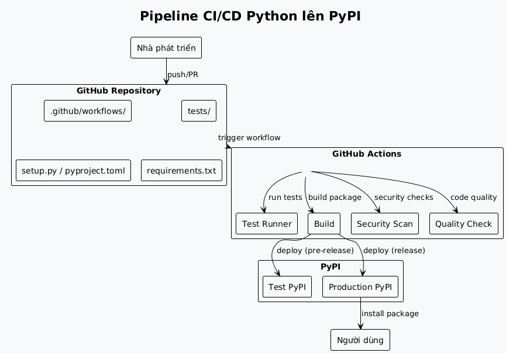
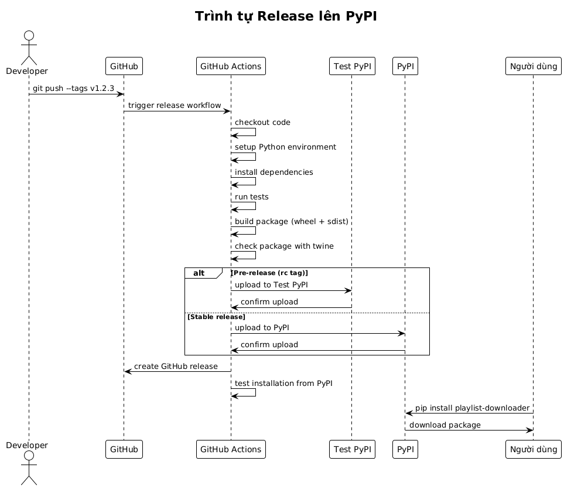
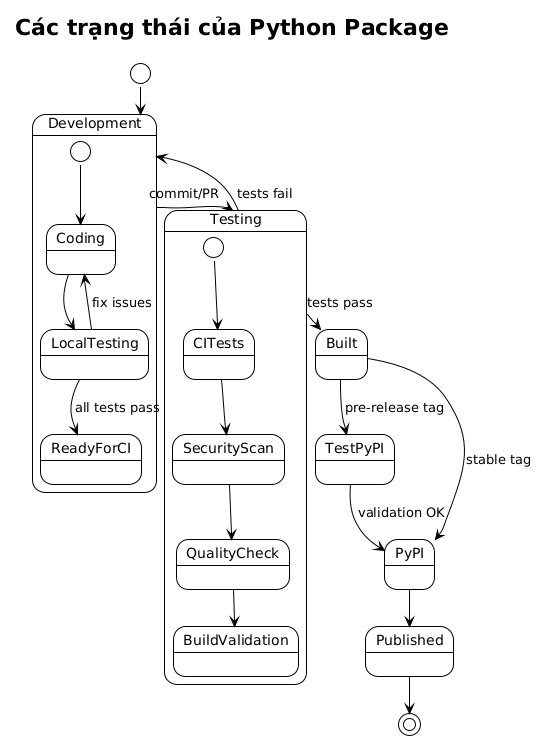
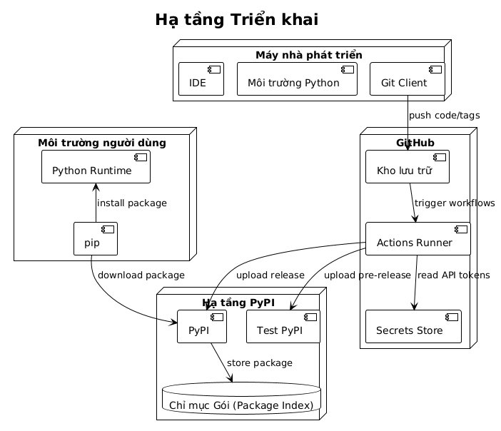
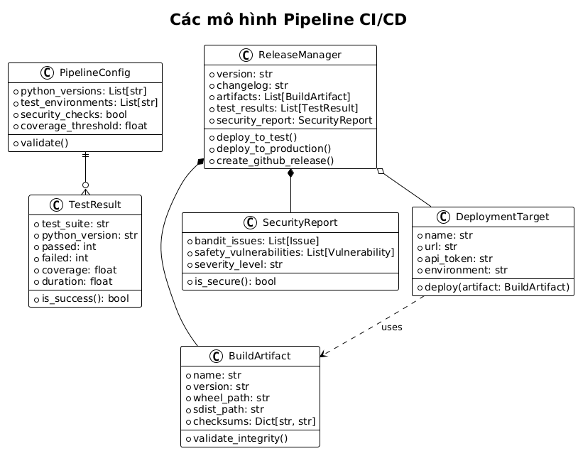

Phần 2: Công nghiệp hóa và bảo mật pipeline CI/CD Python nâng cao
Đăng ngày 18 July 2025
- Giới thiệu
- Kiến trúc Pipeline CI/CD
- Cấu trúc Dự án
- Cấu hình Package với `pyproject.toml
- Workflow CI/CD - Kiểm thử và Chất lượng
- Quy trình Release và Triển khai
- Sơ đồ Kiến trúc
- Đối tượng và Mô hình của Pipeline
- Cấu hình Secrets
- Kịch bản Phát triển Địa phương
- Các Thực hành Tốt nhất và Khuyến nghị
- Giám sát và Khả năng quan sát
- Kết luận
- Tài nguyên bổ sung
Giới thiệu
Trong phần đầu tiên của loạt bài này, chúng ta đã xây dựng một pipeline CI/CD đơn giản nhưng hiệu quả để tự động hóa việc kiểm thử và xuất bản một package Python lên PyPI.
Giờ là lúc để chuyên nghiệp hóa pipeline này. Trong phần thứ hai này, chúng ta sẽ:
-
Di chuyển sang tiêu chuẩn hiện đại pyproject.toml,
-
Thêm các công cụ chất lượng và bảo mật (
Black,Mypy,Bandit,Safety), -
Thiết lập các bài kiểm tra đa phiên bản,
-
Tích hợp triển khai dần dần thông qua Test PyPI,
-
Tự động hóa việc đánh số phiên bản và cải thiện giám sát pipeline.
Hãy chuẩn bị để chuyển từ một pipeline cơ bản sang một cơ sở hạ tầng CI/CD chuyên nghiệp.
Triển khai một ứng dụng Python trên PyPI đòi hỏi một pipeline CI/CD mạnh mẽ nhằm tự động hóa việc kiểm thử, xây dựng và xuất bản các package. Bài viết này chi tiết cách thiết lập một pipeline hoàn chỉnh sử dụng GitHub Actions cho một ứng dụng CLI Python, dựa trên các thực hành tốt nhất của hệ sinh thái Python hiện đại.
Kiến trúc Pipeline CI/CD
Pipeline mà chúng ta sẽ xây dựng tuân theo cách tiếp cận gồm nhiều giai đoạn:

Cấu trúc Dự án
Một ứng dụng CLI Python sẵn sàng để phân phối phải tuân thủ một cấu trúc chuẩn hóa:
playlist-downloader/
├── .github/
│ └── workflows/
│ ├── ci.yml
│ ├── release.yml
│ └── security.yml
├── src/
│ └── playlist_downloader/
│ ├── __init__.py
│ ├── cli.py
│ ├── core/
│ └── adapters/
├── tests/
│ ├── unit/
│ ├── integration/
│ └── conftest.py
├── docs/
├── pyproject.toml
├── requirements.txt
├── requirements-dev.txt
├── MANIFEST.in
├── README.md
├── LICENSE
└── CHANGELOG.mdCấu hình Package với `pyproject.toml
Tệp`pyproject.toml`là tiêu chuẩn hiện đại để cấu hình các package Python:
[build-system]
requires = ["setuptools>=45", "wheel", "setuptools_scm>=6.2"]
build-backend = "setuptools.build_meta"
[project]
name = "playlist-downloader"
authors = [
{name = "Christophe Hérolivier", email = "cheroliv@example.com"},
]
description = "CLI tool for YouTube playlist management"
readme = "README.md"
requires-python = ">=3.8"
keywords = ["youtube", "playlist", "cli", "downloader"]
license = {text = "MIT"}
classifiers = [
"Development Status :: 4 - Beta",
"Environment :: Console",
"Intended Audience :: End Users/Desktop",
"License :: OSI Approved :: MIT License",
"Operating System :: OS Independent",
"Programming Language :: Python :: 3",
"Programming Language :: Python :: 3.8",
"Programming Language :: Python :: 3.9",
"Programming Language :: Python :: 3.10",
"Programming Language :: Python :: 3.11",
"Topic :: Multimedia :: Sound/Audio",
"Topic :: Utilities",
]
dependencies = [
"typer>=0.9.0",
"yt-dlp>=2023.7.6",
"google-api-python-client>=2.0.0",
"google-auth-oauthlib>=1.0.0",
"pyyaml>=6.0",
"rich>=13.0.0",
]
dynamic = ["version"]
[project.optional-dependencies]
dev = [
"pytest>=7.0.0",
"pytest-cov>=4.0.0",
"pytest-mock>=3.10.0",
"black>=23.0.0",
"flake8>=6.0.0",
"mypy>=1.0.0",
"pre-commit>=3.0.0",
"tox>=4.0.0",
]
test = [
"pytest>=7.0.0",
"pytest-cov>=4.0.0",
"pytest-mock>=3.10.0",
]
[project.urls]
Homepage = "https://github.com/cheroliv/playlist-downloader"
Documentation = "https://github.com/cheroliv/playlist-downloader#readme"
Repository = "https://github.com/cheroliv/playlist-downloader.git"
"Bug Tracker" = "https://github.com/cheroliv/playlist-downloader/issues"
[project.scripts]
playlist-downloader = "playlist_downloader.cli:main"
[tool.setuptools_scm]
write_to = "src/playlist_downloader/_version.py"
[tool.setuptools.packages.find]
where = ["src"]
[tool.pytest.ini_options]
testpaths = ["tests"]
python_files = ["test_*.py"]
python_classes = ["Test*"]
python_functions = ["test_*"]
addopts = [
"--cov=src/playlist_downloader",
"--cov-report=html",
"--cov-report=term-missing",
"--cov-fail-under=85",
]
[tool.black]
line-length = 88
target-version = ['py38']
include = '\.pyi?$'
extend-exclude = '''
/(
\.eggs
| \.git
| \.hg
| \.mypy_cache
| \.tox
| \.venv
| _build
| buck-out
| build
| dist
)/
'''
[tool.mypy]
python_version = "3.8"
warn_return_any = true
warn_unused_configs = true
disallow_untyped_defs = true
disallow_incomplete_defs = true
check_untyped_defs = true
disallow_untyped_decorators = true
no_implicit_optional = true
warn_redundant_casts = true
warn_unused_ignores = true
warn_no_return = true
warn_unreachable = true
strict_equality = true
[[tool.mypy.overrides]]
module = [
"yt_dlp.*",
"googleapiclient.*",
"google_auth_oauthlib.*",
]
ignore_missing_imports = trueWorkflow CI/CD - Kiểm thử và Chất lượng
Luồng công việc chính (ci.yml) thực hiện các bài kiểm tra trên nhiều phiên bản Python:
name: CI
on:
push:
branches: [ main, develop ]
pull_request:
branches: [ main ]
jobs:
test:
runs-on: ubuntu-latest
strategy:
matrix:
python-version: ["3.8", "3.9", "3.10", "3.11"]
steps:
- uses: actions/checkout@v4
with:
fetch-depth: 0
- name: Set up Python ${{ matrix.python-version }}
uses: actions/setup-python@v4
with:
python-version: ${{ matrix.python-version }}
- name: Cache dependencies
uses: actions/cache@v3
with:
path: |
~/.cache/pip
~/.cache/pre-commit
key: ${{ runner.os }}-pip-${{ hashFiles('**/requirements*.txt') }}
restore-keys: |
${{ runner.os }}-pip-
- name: Install dependencies
run: |
python -m pip install --upgrade pip
pip install -e ".[dev]"
- name: Lint with flake8
run: |
flake8 src tests --count --select=E9,F63,F7,F82 --show-source --statistics
flake8 src tests --count --exit-zero --max-complexity=10 --max-line-length=88 --statistics
- name: Check code formatting with Black
run: black --check src tests
- name: Type checking with mypy
run: mypy src
- name: Run tests with pytest
run: |
pytest tests/ -v --cov=src/playlist_downloader \
--cov-report=xml --cov-report=term-missing
- name: Upload coverage to Codecov
uses: codecov/codecov-action@v3
if: matrix.python-version == '3.11'
with:
file: ./coverage.xml
flags: unittests
name: codecov-umbrella
security:
runs-on: ubuntu-latest
steps:
- uses: actions/checkout@v4
- name: Set up Python
uses: actions/setup-python@v4
with:
python-version: "3.11"
- name: Install dependencies
run: |
python -m pip install --upgrade pip
pip install bandit[toml] safety
- name: Run security checks with bandit
run: bandit -r src/ -f json -o bandit-report.json
- name: Check dependencies with safety
run: safety check --json --output safety-report.json
- name: Upload security reports
uses: actions/upload-artifact@v3
if: always()
with:
name: security-reports
path: |
bandit-report.json
safety-report.json
build:
needs: [test, security]
runs-on: ubuntu-latest
steps:
- uses: actions/checkout@v4
with:
fetch-depth: 0
- name: Set up Python
uses: actions/setup-python@v4
with:
python-version: "3.11"
- name: Install build dependencies
run: |
python -m pip install --upgrade pip
pip install build twine
- name: Build package
run: python -m build
- name: Check package with twine
run: twine check dist/*
- name: Upload build artifacts
uses: actions/upload-artifact@v3
with:
name: dist
path: dist/Quy trình Release và Triển khai
Quy trình phát hành (release.yml) quản lý việc xuất bản tự động lên PyPI:
name: Release
on:
push:
tags:
- 'v*.*.*'
workflow_dispatch:
inputs:
environment:
description: 'Deployment environment'
required: true
default: 'test'
type: choice
options:
- test
- production
env:
PYTHON_VERSION: "3.11"
jobs:
release:
runs-on: ubuntu-latest
environment:
name: ${{ github.event.inputs.environment || (startsWith(github.ref, 'refs/tags/') && 'production' || 'test') }}
steps:
- uses: actions/checkout@v4
with:
fetch-depth: 0
- name: Set up Python
uses: actions/setup-python@v4
with:
python-version: ${{ env.PYTHON_VERSION }}
- name: Install dependencies
run: |
python -m pip install --upgrade pip
pip install build twine
- name: Build package
run: python -m build
- name: Check package
run: twine check dist/*
- name: Publish to Test PyPI
if: github.event.inputs.environment == 'test' || (startsWith(github.ref, 'refs/tags/') && contains(github.ref, 'rc'))
env:
TWINE_USERNAME: __token__
TWINE_PASSWORD: ${{ secrets.TEST_PYPI_API_TOKEN }}
run: |
twine upload --repository testpypi dist/*
- name: Publish to PyPI
if: github.event.inputs.environment == 'production' || (startsWith(github.ref, 'refs/tags/') && !contains(github.ref, 'rc'))
env:
TWINE_USERNAME: __token__
TWINE_PASSWORD: ${{ secrets.PYPI_API_TOKEN }}
run: |
twine upload dist/*
- name: Create GitHub Release
if: startsWith(github.ref, 'refs/tags/')
uses: actions/create-release@v1
env:
GITHUB_TOKEN: ${{ secrets.GITHUB_TOKEN }}
with:
tag_name: ${{ github.ref }}
release_name: Release ${{ github.ref }}
draft: false
prerelease: ${{ contains(github.ref, 'rc') }}
post-release:
needs: release
runs-on: ubuntu-latest
if: startsWith(github.ref, 'refs/tags/')
steps:
- uses: actions/checkout@v4
- name: Set up Python
uses: actions/setup-python@v4
with:
python-version: ${{ env.PYTHON_VERSION }}
- name: Test installation from PyPI
run: |
sleep 60 # Attendre la propagation sur PyPI
pip install playlist-downloader
playlist-downloader --version
- name: Update documentation
run: |
# Script pour mettre à jour la documentation
echo "Documentation updated for version ${GITHUB_REF#refs/tags/}"Sơ đồ Kiến trúc
Biểu đồ Tuần tự - Quy trình Release

Biểu đồ Trạng thái - Vòng đời của Package

Sơ đồ Triển khai - Cơ sở hạ tầng CI/CD

Đối tượng và Mô hình của Pipeline
Biểu đồ Lớp - Mô hình CI/CD

Cấu hình Secrets
Để pipeline hoạt động, bạn cần cấu hình các secret sau trong GitHub:
Secrets GitHub Actions
# Dans Settings > Secrets and variables > Actions
# Token PyPI pour la production
PYPI_API_TOKEN=pypi-...
# Token Test PyPI pour les pré-releases
TEST_PYPI_API_TOKEN=pypi-...
# Token GitHub pour créer les releases
GITHUB_TOKEN=(automatiquement fourni)
# Token Codecov (optionnel)
CODECOV_TOKEN=...Tạo Token PyPI
# 1. Créer un compte sur PyPI et Test PyPI
# 2. Aller dans Account Settings > API tokens
# 3. Créer un token avec scope "Entire account" ou spécifique au projet
# 4. Format du token : pypi-AgEIcHlwaS5vcmc...Kịch bản Phát triển Địa phương
Để thuận tiện cho việc phát triển, hãy tạo các tập lệnh tiện ích:
Makefile
.PHONY: install test lint format security build clean release-test release-prod
install:
pip install -e ".[dev]"
test:
pytest tests/ -v --cov=src/playlist_downloader
lint:
flake8 src tests
mypy src
format:
black src tests
security:
bandit -r src/
safety check
build:
python -m build
twine check dist/*
clean:
rm -rf build/ dist/ *.egg-info/
find . -type d -name __pycache__ -delete
find . -name "*.pyc" -delete
release-test: clean build
twine upload --repository testpypi dist/*
release-prod: clean build
twine upload dist/*
pre-commit: format lint test security
@echo "✅ Prêt pour commit"Kịch bản Phiên bản
#!/usr/bin/env python3
"""Script pour gérer les versions du projet."""
import sys
import subprocess
from pathlib import Path
def get_current_version():
"""Récupère la version actuelle depuis git."""
try:
result = subprocess.run(
["git", "describe", "--tags", "--abbrev=0"],
capture_output=True,
text=True,
check=True
)
return result.stdout.strip()
except subprocess.CalledProcessError:
return "0.0.0"
def create_version_tag(version, message=None):
"""Crée un tag de version."""
if not version.startswith('v'):
version = f'v{version}'
tag_message = message or f"Release {version}"
subprocess.run(["git", "tag", "-a", version, "-m", tag_message], check=True)
print(f"✅ Tag {version} créé")
# Push le tag
subprocess.run(["git", "push", "origin", version], check=True)
print(f"✅ Tag {version} poussé vers origin")
if __name__ == "__main__":
if len(sys.argv) < 2:
current = get_current_version()
print(f"Version actuelle: {current}")
print("Usage: python version.py <new_version> [message]")
sys.exit(1)
new_version = sys.argv[1]
message = sys.argv[2] if len(sys.argv) > 2 else None
create_version_tag(new_version, message)Các Thực hành Tốt nhất và Khuyến nghị
Đánh số phiên bản ngữ nghĩa
Sử dụng phiên bản ngữ nghĩa (SemVer):
-
MAJOR.MINOR.PATCH(ex: 1.2.3) -
MAJOR: các thay đổi không tương thích -
MINOR: các tính năng mới tương thích -
PATCH: các bản sửa lỗi tương thích
Chiến lược Branching
main ──●──●──●──●──●────●── (releases stables)
/ / /
develop ──●──●──●──●──●──●──●──●── (développement)
/ / /
feature/xxx ●──●──●──●──●──/ (fonctionnalités)Kiểm thử và Độ bao phủ
-
Độ bao phủ mã tối thiểu: 85%
-
Kiểm thử đơn vị cho logic nghiệp vụ
-
Kiểm thử tích hợp cho các adapter
-
Kiểm thử đầu cuối cho các CLI
Bảo mật
-
Quét phụ thuộc tự động (Safety)
-
Phân tích tĩnh mã nguồn (Bandit)
-
Không bao giờ để secret trong code
-
Sử dụng các token PyPI cụ thể
Giám sát và Khả năng quan sát
Số liệu đo lường Pipeline
# .github/workflows/metrics.yml
name: Pipeline Metrics
on:
workflow_run:
workflows: ["CI", "Release"]
types: [completed]
jobs:
metrics:
runs-on: ubuntu-latest
steps:
- name: Collect metrics
run: |
echo "Pipeline: ${{ github.event.workflow_run.name }}"
echo "Status: ${{ github.event.workflow_run.conclusion }}"
echo "Duration: ${{ github.event.workflow_run.updated_at - github.event.workflow_run.created_at }}"
# Envoyer vers système de monitoringThông báo
# Ajout dans les workflows pour notifications
- name: Notify on failure
if: failure()
uses: 8398a7/action-slack@v3
with:
status: failure
text: "❌ Pipeline failed for ${{ github.repository }}"
env:
SLACK_WEBHOOK_URL: ${{ secrets.SLACK_WEBHOOK }}Kết luận
Pipeline CI/CD đầy đủ này cho Python cung cấp:
-
Tự động hóa hoàn toàn: từ xác thực mã đến xuất bản
-
Bảo mật: quét tự động và quản lý bí mật an toàn
-
Chất lượng: kiểm tra đa phiên bản, linting và độ bao phủ mã nguồn
-
Độ tin cậy: triển khai dần dần thông qua Test PyPI
-
Khả năng truy xuất nguồn gốc: các artifact, báo cáo và bản phát hành GitHub
Việc áp dụng các thực hành này đảm bảo một quy trình bàn giao mạnh mẽ và chuyên nghiệp cho các ứng dụng Python CLI của bạn, giúp việc bảo trì và phát triển các dự án về lâu dài trở nên dễ dàng hơn.